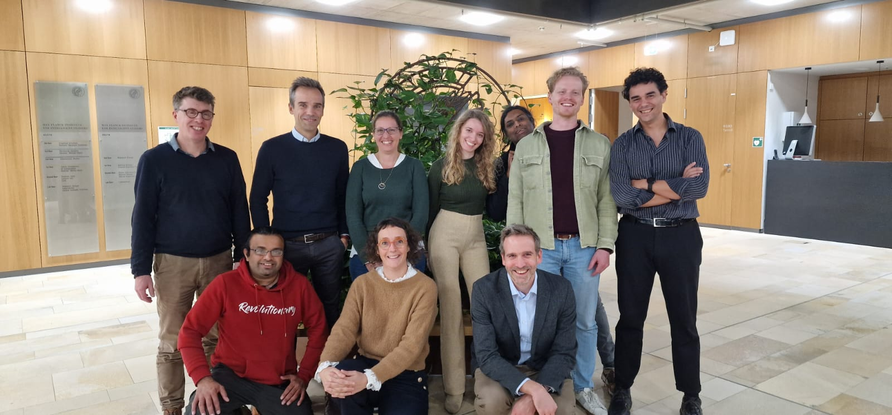

Check out our last publication in Nature!
A roadmap towards standardized neuroimaging approaches for human thalamic nuclei
This paper reviews current methods for segmenting individual thalamic nuclei in neuroimaging data, highlighting the challenges and limitations of existing techniques. We argue that the thalamus is often overlooked in neuroimaging studies, and that a standardized approach to segmenting its nuclei is crucial for advancing our understanding of its role in both health and disease. The roadmap we propose for future research includes establishing a multidisciplinary group to define "ground truths" for thalamic nuclei, developing harmonized nomenclature and acquisition protocols, and creating large open-source datasets. This roadmap aims to foster greater collaboration and enhance our ability to study this essential brain structure.